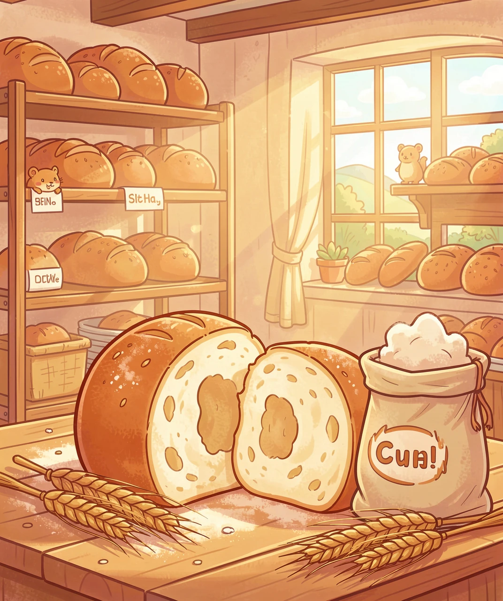
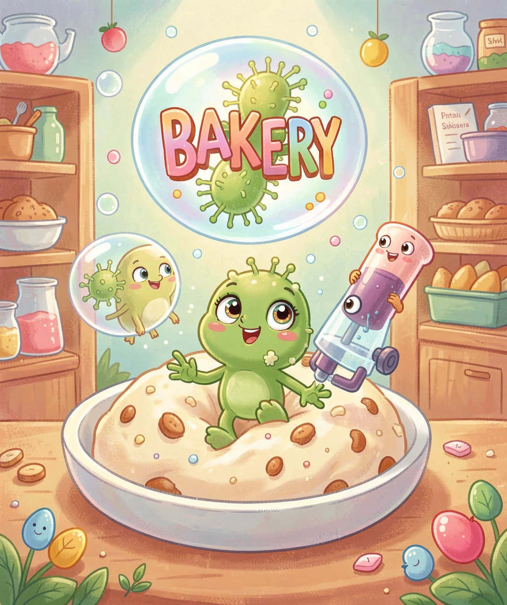
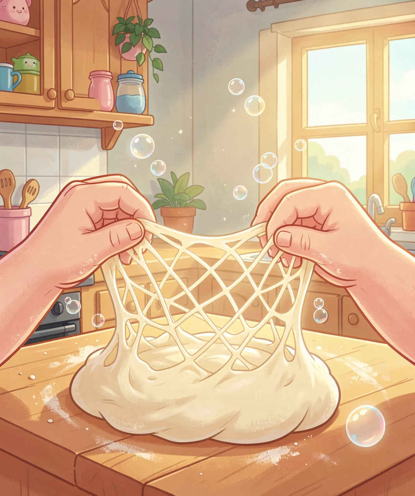
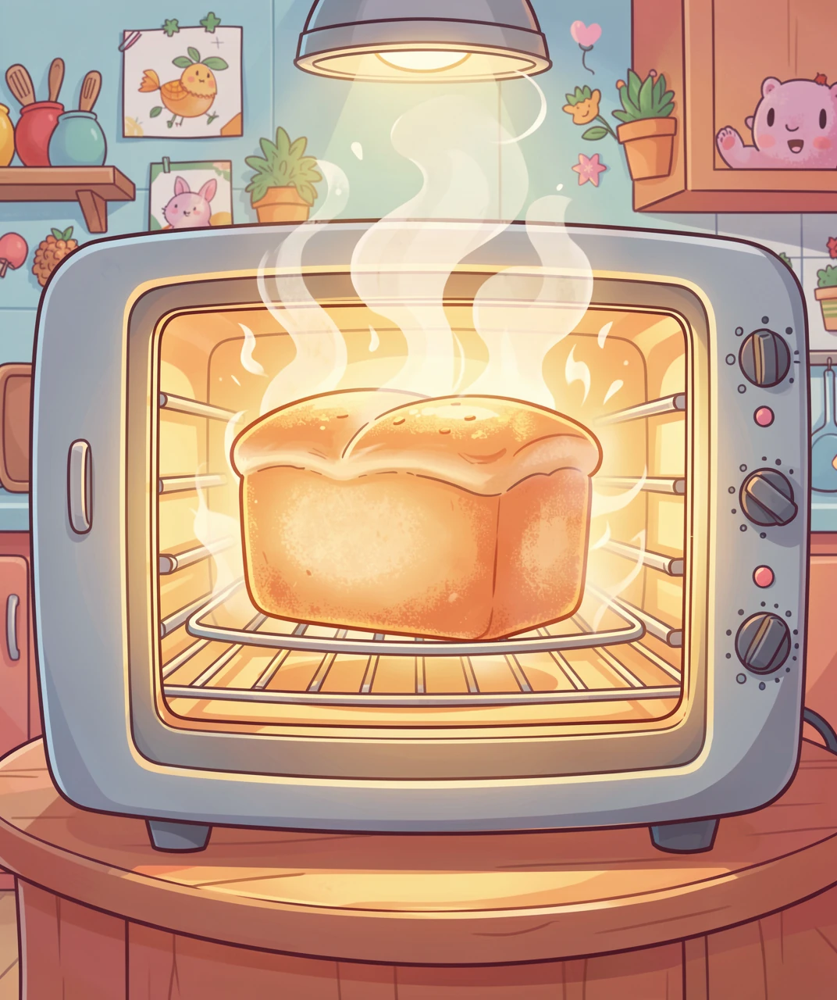
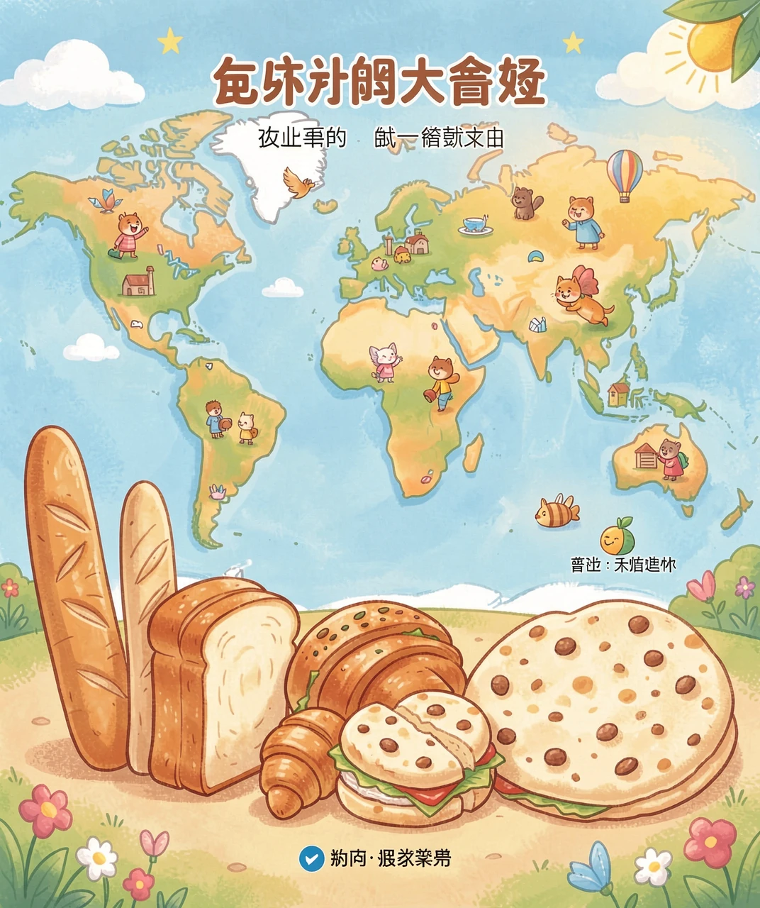

面粉、水和看不见的小生命，怎么变成香喷喷的面包？

把面粉、水和一点盐混在一起，揉一揉，你会得到一块又白又硬的面团——这时候它可一点都不好吃。可是，如果把它放在温暖的地方等上几个小时，面团会像吹气球一样慢慢鼓起来，变得又软又大！是谁在帮它「吹气」？
答案是一群看不见的小生命——酵母菌。它们小到要用显微镜才能看见，一个酵母菌只有一粒灰尘的几百分之一大。但是，几千亿个酵母菌一起工作，力量就大得惊人！它们最喜欢吃的就是面粉里的糖，吃饱之后会「打嗝」——吐出二氧化碳气体。这些气体被面团里的面筋网兜住，跑不出去，就把面团撑得鼓鼓的，像一个个小气球。

你可能会问：气体吐出来了，为什么面团不会像漏气的气球一样瘪掉？因为面粉里藏着一位秘密英雄——面筋（麸质）。
当你加水揉面的时候，面粉里的两种蛋白质（麦谷蛋白和麦醇溶蛋白）会手拉手，织成一张超级有弹性的「网」。这张网就像无数个小小的塑料袋，把酵母吐出的二氧化碳气体牢牢兜住。揉面越久，网织得越密越有弹性，面团就越能鼓起来。
所以揉面不是随便捏捏——那是在「织网」！这也是为什么做面包要用高筋面粉：它蛋白质多，织出来的网结实，能兜住更多的气，面包就会更蓬松。用低筋面粉做面包，网太松，气都跑光了，面包就变成了「硬石头」。

面团发好了，放进滚烫的烤箱，奇迹发生了：面包在烤箱里还会再长大一圈！这是因为温度升高，酵母菌更加兴奋，拼命吐气；同时气体受热膨胀（热胀冷缩），小气泡越胀越大。
等到面包内部温度超过 60°C，酵母菌就热死了，面筋网也「定型」——像水泥一样凝固住，不再变化。这时候面包就有了固定的形状和松软的内部结构。
切开面包，你会看到一个个小洞——那每个洞都是一个气泡留下的「房子」！气泡多、大小均匀，面包就松软好吃；气泡少或者大小不一，面包就粗糙。面包师有一句行话：好面包 = 好面团 + 好火候。洞洞就是面包的「身份证」。

刚出炉的面包软软的，放一晚上就变硬了，是水分跑光了吗？其实不只是这样。
面包里的淀粉分子，在烤的时候像煮熟的粉丝一样舒展开，吸饱了水。但是放凉之后，它们会慢慢「回缩」，重新挤在一起，把水分挤出来——这个过程叫老化（回生）。所以面包变硬，主要是淀粉「重新排队」了，不只是水跑了。
有趣的是：放进冰箱冷藏，面包老化得更快；而冷冻（零下 18°C）反而能保鲜——因为低温把淀粉分子冻住了，不让它们重新排队。所以想吃软面包，要么当天吃完，要么直接冻起来，吃的时候再烤一烤。

今天，面包有成千上万种模样：法国的长棍、意大利的夏巴塔、德国的黑麦面包、印度的馕、中东的皮塔饼……它们都是面粉 + 水 + 发酵的「变奏曲」。
想一想：一块面包里，藏着看不见的微生物、会织网的蛋白质、热胀冷缩的气体，还有几千年前古埃及人的偶然发现。每一口松软，都是科学和历史的味道。
下次吃面包的时候，不妨先掰开看一看那些小洞洞——那里面住着的，可是一群勤劳的「小厨师」和它们吹出的神奇气球哦！